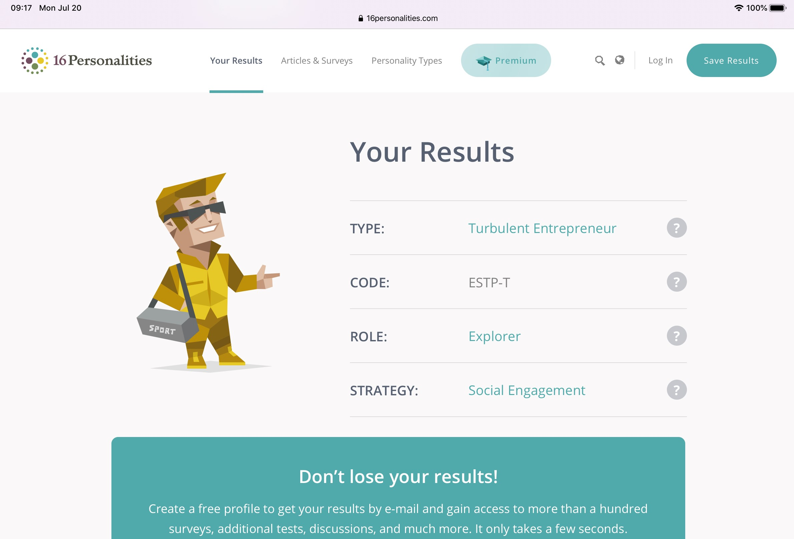
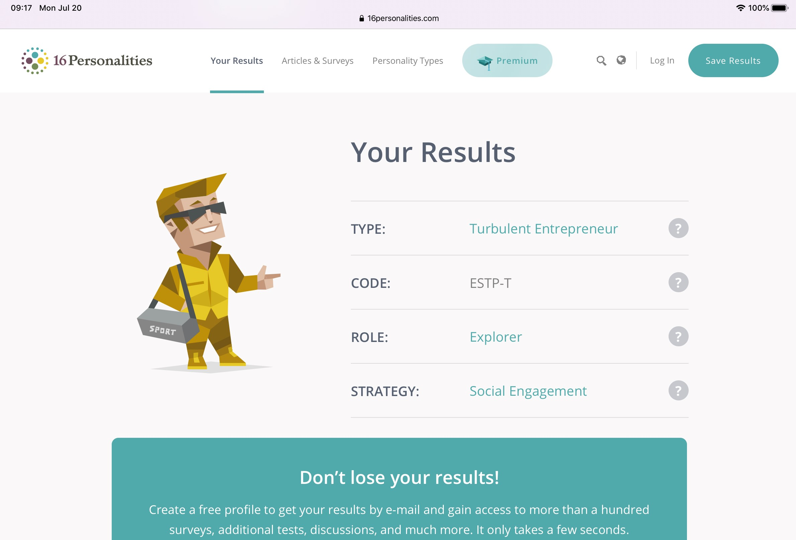

Overview:
The project is called “ Health for Life ”, which creates a mobile platform application to monitor the health situation for patients who have high blood pressure, heart disease, and diabetes. The clients need to make the personal medical profile and update it in the routine. This app will statistic and contribute what is the solution of each specific disease. Besides, patients can easily connect with doctors if they want or in an emergency. This project uses Java as the primary programming language to code “Health for Life”. This will be a useful project if successful to improve the smart health system.
Motivation:
At the Corona Virus situation, the healthcare system has been developing day by day not only in Vietnam but also around the world with the demand of health mentoring to diagnose diseases before getting worse. According to the research of the World Health Organization, approximately 1.5 billions people have a serious medical condition significantly relevant with heart, blood and other diseases. For high blood pressure, heart disease and diabetes, the daily recording health status is necessary to analyse and get the result during the treatment process. This project has used mobile applications because this is one of the most popular platforms. For high blood pressure, heart disease and diabetes patients this app will be useful to support updating their medical profile and connecting with doctors in emergency cases immediately.
Description:
In general, the health for life application is divided into three main features including collecting and analyzing user medical records, communicating with advisors tailored to each disease, finding and calling hotline numbers with the nearest local hospital in an emergency case.
Manage medical profile feature:
In the first step, the patient needs to register for a user account, including an email or username and a private password to log in to the Health for Life application. Next, the patient must create a medical record by providing necessary information such as body mass index, heart rate, blood pressure, and other indicators related to the condition. After completing the steps of providing information, the system will automatically analyze and record through the index that the patient provides daily with specialized heart rate measuring devices for patients with heart and blood and pressure for patients with hypertension. "Health for Life" will analyze the increase and decrease of the medical condition indicators based on the medical aspect and give results after every week. This result will help patients assess the effectiveness of treatment as well as warn when the system detects a sudden increase in indicators and requests patients have first-aid at the closest medical center punctually.
Online counseling and health examination system:
"Health for Life" also provides users with a digital health examination system. This feature allows users to connect with cardiologists from different hospitals to examine online, monitor health status and give advice based on the patient's previous medical records. This system receives contributions from a team of prestigious volunteer doctors who are ready to assist patients. Users can actively choose the time of medical examination through flexible schedules. After choosing their own time, patients will continue to choose a doctor with full information and finally wait for confirmation from the doctor. After scheduling, physicians will prepare the records that patients already have in the process of recording the daily indicators. Finally, doctors and patients will be communicated remotely from time to time, in which customers have chosen Video Call or messaging via third-party such as Zoom, Microsoft Team. This brings convenience, restrictions on movement and quickness in the era of technology 4.0 and especially safety in the current complicated situation of Covid-19.
Emergency situations services:
When facing the danger of the mortal, every minute becomes more important so the emergency task at the right time is the key of life. “Health of Life” always has a highlight button for emergency function. When the user clicks this button the system activates the emergency mode. Victims will be located via GPS and query the nearest hospital to their current location. The system will automatically provide the hotline number and switch to voice call mode without any action on the phone. While waiting for the ambulance, the application will provide a temporary emergency procedure to assist regain patient stability step by step. After the victim has approached the paramedic, "Health for Life" will act as a profile with full personal information as well as medical history, blood type, allergy of drugs (if any) and medical diary for the latest period of time.
Tools and technologies:
According to the process of the “Health for Life” project, we need some computing tools to build an app orderly. One of the convenient software development kits for Java smartphone applications is Xcode for IOS and Android Studio for Android system. Adobe graphics toolkit includes adobe photoshop, adobe illustrator will handle to design the main colorful interface of the application. Because of the running application on IOS and Android platforms, we decided to choose framework 7 that is the free open source with full feature to develop mobile apps with original IOS and Android interfare. During work, Github will be the place to push all programming data and share it with team members.
Skills Required:
In this project, the requirements are general knowledge about Java programming language. Critical thinking also helps developers have the logical solution to write a logical app effectively. When developing the mobile application, One of the essential skills is to understand the user interface (UI) and user experience (UX). The (UI),(UX) skills play an important role to design app colors, how the layout is organized, and fonts as well as convey the message of “Health for Life” to the client, the service provider, and the community. Finally, soft skills especially teamwork will bring an ideal and fairly working environment for all of the members in the “Health of Life” project team.
Outcome:
If the trial results of this project are successful, the "Health for Life" application will be sent to users via ads on social media. This app will be submitted to Google Play for android as well as the App Store for IOS operating systems. The application will closely control the progression of the disease and provide local health services such as clinics and medical facilities to provide peace of mind as a physician who is always watching for the patient. This will also bring many benefits including getting good results during treatment and reducing the number of patients suffering from sudden death, stroke and some complications when not monitored and in a timely emergency.


 
